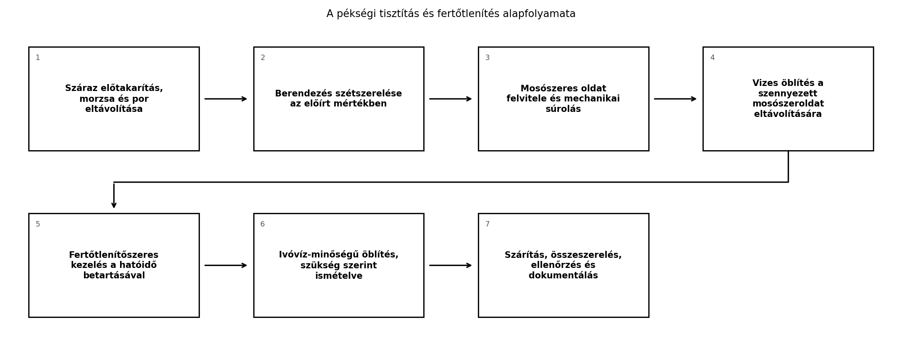

A pékségben a tisztítás és fertőtlenítés nem „takarítás a szemnek”, hanem a másnapi termék biztonságának alapja. Ha az este lezárt dagasztógépben tészta, lisztpor vagy tojásos massza marad, reggelre a mikrobák elszaporodhatnak, az allergének átkerülhetnek egy másik termékbe, és a gép is gyorsabban romlik. Ebben az alfejezetben a tisztítási műveletet lépésről lépésre tanítjuk, a kézi és gépi tisztítás gyakorlatával, a tisztítási terv összeállításával, a hatásfokot befolyásoló tényezőkkel és az eredményesség egyszerű ellenőrzésével.
A pékségi tisztítás és fertőtlenítés általános sorrendjét az alábbi folyamat mutatja. Az egyes lépések anyaga, hőmérséklete és ideje mindig az adott területre szabott tisztítási tervtől függ.

A folyamat legfontosabb üzenete: előbb tisztítunk, és csak utána fertőtlenítünk. A fertőtlenítőszer nem hatol át a rászáradt tésztán, a zsíron vagy a lisztporszerű rétegen.
A pék este azt látja, hogy a tésztaosztó felületén lisztpor, letapadt tészta és egy kevés olajos massza van. Ha ezt csak forró vízzel leöblíti, a maradék a holnap reggeli termékbe kerülhet, és a gép belső sarkaiban is tovább romlik. Ezért ismerni kell a tisztítási lépések pontos szerepét.
Tisztítási lépések – ellenőrzőlista.
Száraz előtakarítás. Cél: a nagyobb
élelmiszer-maradék, morzsa, por, karton- vagy fóliadarab eltávolítása.
Eszköz: kefe, lapát, seprű, üzemi porszívó, amit nem porfelhősen
használunk. A száraz előtakarítás csökkenti a nedves mosás
szennyvíz-terhelését és megakadályozza a szennyeződés szétkenését.
Ellenőrzés: a felületen nem marad látható tészta- vagy
porréteg.
Előkészítés, szükség szerinti szétszerelés. A
gépek leállítása, áramtalanítása, a mozgó részek megállása után a
technológiai előírásban megengedett alkatrészeket leszereljük. Azokat a
részeket, amelyeket a gépkönyv vagy a tisztítási terv szerint szét kell
szedni, úgy helyezzük el, hogy ne sérüljenek, és később pontosan össze
lehessen szerelni.
Gépbiztonság. Szétszerelni és tisztítani csak
leállított, áramtalanított, újraindítás ellen biztosított gépet szabad.
A védőburkolatot, reteszelést nem iktatjuk ki.
Mosószeres oldat felvitele és mechanikai tisztítás. A mosószer feloldja a zsírt, a fehérjét és a ráégett maradékot, a mechanikai hatás – kefe, szivacs, törlőkendő, habgenerátor vagy kefeágy – pedig leválasztja a szennyeződést.
Vizes öblítés. Cél: a fellazított szennyeződést és a mosószer-maradványt eltávolítani, mielőtt a fertőtlenítőszert felvinnénk. Az öblítővíz legyen ivóvíz-minőségű, hőmérséklete az adott tisztítási terv szerint jellemzően 20–50 °C, de ez a felülettől és a gyártói előírástól függ (ellenőrizendő: üzemi tisztítási terv).
Fertőtlenítőszeres kezelés. A fertőtlenítőszer-oldatot a gyártó által előírt koncentrációban, hőmérsékleten és hatóidőn át hagyjuk hatni. A hatóidő alatt a felület nem száradhat vissza. A fertőtlenítőszert csak a tisztítási tervben engedélyezett anyagból, jelölt edényből, mérőedénnyel készítjük.
Befejező öblítés. A fertőtlenítőszert a gyártói adatlapon megadott módon el kell távolítani a felületről, kivéve, ha a szer kifejezetten „öblítés nélkül használható” kategóriájú, és ezt az üzemi tisztítási terv engedélyezi (ellenőrizendő: gyártói adatlap és az üzem HACCP-terve). A befejező öblítés után a felületen nem maradhat vegyszerszag vagy síkos érzet.
Szárítás. A felületet levegőn hagyjuk megszáradni, vagy tiszta, egyszer használatos törlőkendővel szárazra töröljük. A nedves felület kedvező baktérium- és penészgomba-szaporodási hely.
Összeszerelés, ellenőrzés, dokumentálás. A leszerelt alkatrészeket visszahelyezzük, a gép működését biztonsági próbával ellenőrizzük, és a takarítási naplóban rögzítjük az elvégzett lépéseket, az észlelt eltéréseket és a javító intézkedéseket.
A tisztítási terv a pékség saját, írott műveleti utasítása. Nem általános „takarítási rend”, hanem területenként, gépenként és gyártási helyzetenként megadja, mit, mivel, hogyan, milyen gyakran, kinek és hogyan kell ellenőrizni.
A terv elemei:
Példa – napi záró tisztítási terv (kivonat).
A tésztaosztó gépet minden műszak vége után, tojásos tészta után azonnal
is, az előírt szétszereléssel tisztítják: előtakarítás → mosószeres
habtisztítás → öblítés → fertőtlenítés 5 perc hatóidővel → öblítés →
szárítás. A hatóidőt a gyártó adatlapja és az üzemi HACCP-terv alapján
ellenőrzik (ellenőrizendő: üzemi tisztítási terv).
Kézi tisztításnál a tisztítószer-oldatot mérőedénnyel, pontosan hígítva, kétvödrös módszerrel használjuk: az egyik vödör a mosószeres oldat, a másik az öblítővíz. Így a kefe nem mossa vissza a szennyeződést. A súrolás iránya lehetőleg a lefolyó vagy a gyűjtő felé haladjon, ne a tiszta terület felé. A kézi tisztítás előnye, hogy a pék jól látja a felületet; hátránya, hogy a mechanikai hatás függ a kefe nyomásától és a dolgozó figyelmétől.
A kétvödrös módszer eszközeit és lépéseit a lenti képsor mutatja. Eszközök: (1) mérőedény a hígításhoz, (2) feliratozott vödör a mosószeres oldattal, (3) feliratozott vödör az öblítővízzel, (4) kefe vagy szivacs, (5) kaparó, (6) egyszer használatos törlő. A lépések: (A) száraz előtakarítás kaparóval – a morzsát és a tésztamaradékot víz nélkül távolítjuk el; (B) a mosószeres oldat felvitele és súrolás felülről lefelé, a tisztább résztől a szennyezettebb felé; (C) a kefét mindig előbb az öblítővizes vödörben öblítjük ki, és csak utána mártjuk vissza a mosószeres oldatba; (D) öblítés tiszta ivóvízzel; (E) fertőtlenítés a szer címkéjén megadott behatási idővel, majd szárítás.
A leggyakoribb hiba a (C) lépés kihagyása: ha a kefét ugyanabban a vödörben mossuk és öblítjük, a vödör tartalma egyre szennyezettebb lesz, és a kefe a szennyeződést visszahordja a felületre. A HTML-kiadásban a képsor lépésenként lejátszható, és a „Hibás: egy vödör” gomb ezt a hibás változatot mutatja. A hígítást és a behatási időt mindig a szer címkéje és a tisztítási terv adja.
Higiénia. A kézi tisztításhoz tiszta munkaruha, vízálló kötény, védőkesztyű, szükség szerint védőszemüveg kerüljön használatra. A fertőtlenítőszer-oldat gőzét nem szabad közvetlenül belélegezni; a helyiséget szellőztetni kell.
A gépi tisztítás növeli a mechanikai hatást, és jobban ismételhetővé teszi a műveletet. A sütőiparban jellemző módszerek:
Gépbiztonság. Gépi tisztítás előtt mindig ellenőrizni kell, hogy a gép áramtalanított-e, a vészleállító működik-e, a befolyó víz nem érhet-e villamos alkatrészt, és a magas nyomású vízsugár nem irányul-e emberre. A forró kemence- vagy sütőlemez felületet csak a hűlése után, vagy hőálló kesztyűben, az üzemi utasítás szerint szabad tisztítani.
A tisztítás eredményessége négy tényezőtől függ, amelyeket Sinner-körnek nevezünk:
A Sinner-kör tanulsága: ha az egyik tényezőt csökkentjük, a másikat növelni kell ahhoz, hogy az eredmény ne romoljon. Például alacsonyabb hőmérsékleten hosszabb mechanikai súrolásra vagy hosszabb hatóidőre van szükség.
Példa (fogalmi, nem recept). A fehérjés tésztamaradékot hideg–langyos vízzel öblítjük le, mert a forró víz összefőzné a fehérjét. Utána 40–50 °C-os mosószeres oldatot alkalmazunk, erős kefesúrolással, a gyártó által előírt ideig. A fertőtlenítőszeres lépés csak a tiszta felületen hatékony.
A tisztítás annyira lehet jó, amennyire a gép kialakítása megengedi. A higiénikus géptervezés alapelve, hogy a berendezés tisztítható legyen: sima, repedésmentes, rozsdamentes vagy élelmiszeripari felület; kevés holttér, zsákutca, fedett él; lejtős, önürítő felületek; a termékkel érintkező részek könnyen leszerelhetők legyenek. A csavarok, tömítések, zsanérok ne gyűjtsék a tésztát és a nedvességet.
Megjegyzés. Az élelmiszeripari gépek higiéniai követelményeit nemzeti MSZ EN szabványsorozat írja le, a pontos címét és számát mindig ellenőrizni kell (ellenőrizendő: MSZ EN élelmiszeripari gépek higiéniai követelményei – a kiadás előtt pontos szám meghatározandó). A tanulónak nem kell szabványtervezőnek lennie, de a napi takarítás során észre kell vennie a repedést, a kopott tömítést, a leszerelhetetlen szennyező teret.
A tisztítás csak akkor tekinthető elvégzettnek, ha az eredményét ellenőriztük. A sütőüzemekben a gyakorlatban használt módszerek:
Higiénia. A mintavételhez használt eszközök sterilek, egyszer használatosak. A dolgozó a mintavétel előtt kezet mos, és tiszta munkaruhát visel, hogy a vizsgálat ne magától a dolgozótól szennyeződjön.
Előírás. Az élelmiszer-vállalkozónak az üzemre szabott tisztítási és fertőtlenítési tervet kell működtetnie, és a tisztító-, fertőtlenítőszereket az élelmiszer-biztonsági követelményeknek megfelelően, jelölten, élelmiszertől elkülönítve kell tárolnia. A takarítás és fertőtlenítés után a felületeken nem maradhat olyan vegyszermaradék, amely az élelmiszert szennyezheti (ellenőrizendő: 852/2004/EK és a NÉBIH GHP-útmutató, valamint a pékség HACCP-terve).
Előírás. Tisztító- és fertőtlenítőszert csak a gyártói biztonsági adatlapon és címkén megadott hígításban, hőmérsékleten és hatóidővel szabad felhasználni. Tilos különböző szereket összeönteni, mert mérgező gőzök keletkezhetnek; a hígítási számítást minden új szernél ellenőrizni kell (ellenőrizendő: gyártói adatlap és a biocid rendelet szerinti engedély).
A tisztítási műveletek akkor is szabályozási pontokká válhatnak, ha nem mérik műszeresen a mikrobákat. Az alábbi táblázat tanulási példa, amelyet az üzemi HACCP-terv pontosan meghatároz (ellenőrizendő: a pékség HACCP-terve, hatósági útmutató).
| Veszély | Megelőzés | Határ (tanulási példa) | Monitoring | Helyesbítés |
|---|---|---|---|---|
| Vegyi szennyezés: tisztítószer-maradék az élelmiszerrel érintkező felületen | Pontos hígítás, befejező öblítés, szag- és szemrevételezés | Nem marad vegyszerszag, síkos érzet, hab; öblítés után a felület tiszta | Minden tisztítás után szemrevételezés, szagellenőrzés; időszakos ellenőrzés | Újraöblíteni, szükség szerint ismételni; a hibás tételt elkülöníteni |
| Mikrobiológiai szennyeződés: nem hatékony fertőtlenítés | Hatóidő, hőmérséklet, koncentráció betartása; tiszta felület | ATP-példa: < 150 RLU/terület (ellenőrizendő) | Minden tisztítás után ATP-mintavétel, időszakos mikrobiológiai minta | Újbóli tisztítás és fertőtlenítés, majd újraellenőrzés |
| Allergén keresztszennyeződés: tojás, tej, dió, szezám maradéka egy allergént nem tartalmazó (… nélkül gyártott) termékhez (lásd Allergének kezelése a pékségben; ellenőrizendő: üzemi allergénkezelési terv) | Allergénváltáskor kijelölt tisztítás, külön eszköz vagy validált mosás | Allergént hordozó felületen az előírt, validált tisztítási állapot | Minden allergénváltás után szemrevételezés + allergénspecifikus gyorsteszt (pl. fehérje- vagy ELISA-alapú lateral flow) a validált tisztítás igazolására; az ATP csak általános tisztaságot jelez, allergénre nem alkalmas | Újratisztítás; a terméket visszatartani a vizsgálat eredményéig |
Allergén. A pékségben a tojásos, tejes, diós, szezámmagos tészták után a felületek és az eszközök allergént hagyhatnak. A „mentes” vagy „gluténmentes” állítást csak akkor szabad használni, ha a tisztítási folyamat validáltan eltávolította a keresztszennyeződést, és ezt a HACCP-terv, valamint a jelölési szabályok is alátámasztják (ellenőrizendő: 1169/2011/EU, üzemi allergénkezelési terv). Az allergénváltásnál a lehető legjobb a külön eszközkészlet; ha nincs, csak akkor szabad közös eszközt használni, ha az üzemi utasításban meghatározott tisztítás után az ellenőrzés is igazolja az eltávolítást.
Valós eset. Egy kis pékségben a tanuló a záró takarításnál a fertőtlenítőszert „szemre”, túl töményen keverte be, és a hatóidő után nem öblítette le alaposan a tésztaosztó gép felületét. Másnap reggel a kiflik a gépen való átfutás után enyhén vegyszerszagúak lettek, és a minőség-ellenőr a terméket nem engedte kiadni. A hiba oka a hígítási arány be nem tartása és a befejező öblítés elmaradása volt. A helyes gyakorlat: mérőedénnyel pontos oldatkészítés, a gyártói adatlapon szereplő hatóidő betartása, majd ivóvíz-minőségű öblítés addig, amíg a felület vegyszerszaga meg nem szűnik. A tanulság: a tisztítási lépések nem cserélhetők fel, és a hibás tisztítás a termékbiztonságot közvetlenül veszélyezteti.
Cél: munkapult és a mellette álló tésztaosztó gép napi záró tisztítása és fertőtlenítése.
Eszközök, anyagok: kefe, szivacs, tiszta törlőkendők, két vödör, mérőedény, élelmiszer-üzemi mosószer és fertőtlenítőszer, hőmérő, stopper, jelölőkártya „Tisztítás alatt”, ATP-gyorsteszt a műszer szerint.
Higiénia. Tiszta munkaruha, hajháló, vízálló kötény, védőkesztyű, szükség szerint védőszemüveg. A vegyszereket élelmiszertől elkülönítve, zárt szekrényben tárold; munkavégzés közben élelmiszert ne egyél, ne igyál. A kevert oldatot csak a művelet idejére készítsd el, és jelölt edényben tartsd.
Gépbiztonság. A tésztaosztó gépet kapcsold ki, a hálózati csatlakozót húzd ki vagy a főkapcsolót kapcsold le és zárd le (újraindítás elleni biztosítás), és várd meg a mozgó részek megállását. A közeli kemence vagy sütőlemez meleg felületét hűlés után, vagy hőálló kesztyűben tisztítsd. A védőrácsot, burkolatot csak a gépkönyvben engedélyezett módon szabad leszerelni.
Lépések:
Ellenőrzési pontok: a felület nem ragad, nem síkos, nincs vegyszerszag, ATP-érték a határ alatt (ellenőrizendő: üzemi határ).
Tipikus hibák: (1) a fertőtlenítőszer hatóidejének lerövidítése; (2) a befejező öblítés elhagyása; (3) a mérőedény nélküli, „szemre” hígítás; (4) a gép áramtalanításának elmulasztása tisztítás közben.
Művelet: kézi tisztítás és fertőtlenítés – munkapult, tésztaosztó asztal napi záró eljárás.
| Lépés | Anyag/oldat | Koncentráció/arány | Hőmérséklet/Idő | Eszköz/módszer | Ellenőrzés |
|---|---|---|---|---|---|
| Száraz előtakarítás | Nem szükséges | – | – | Kefe, lapát, porszívó | Nincs látható maradék |
| Mosószeres tisztítás | Élelmiszerüzemi mosószer | 1:100 (ellenőrizendő) | 40 °C, felületi szennyezéstől függően 5–10 perc | Kétvödrös, kefés súrolás | Szemrevételezés: a felület nedvesen tiszta |
| Első öblítés | Ivóvíz | – | 20–40 °C | Víz, tiszta kendő | A lefolyó víz nem habos, tiszta |
| Fertőtlenítés | Élelmiszerüzemi fertőtlenítőszer | 0,5–2% (ellenőrizendő) | A gyártó szerint, pl. 20 °C-on 5 perc | Permetezés, szivacs vagy kendő | Stopperes hatóidő, nedvesen tartás |
| Befejező öblítés | Ivóvíz | – | 20–40 °C | Vizes öblítés, ismételve | Nincs szag, síkosság, hab |
| Szárítás | – | – | Légszárítás | Tiszta egyszer használatos kendő | Tapintásra száraz |
| Dokumentálás | – | – | Folyamatosan | Takarítási napló | A napló kitöltve, aláírva |
Allergének: az eljárás közben a munkafelület allergént (tojás-, tej-, dió-, szezámnyomok) tartalmazhat; allergénváltásnál a tervben meghatározott validált tisztítási lépéseket kell alkalmazni, és az ellenőrzést specifikusan kell elvégezni.
HACCP- és minőségi pontok: a tisztítás a GHP (előfeltételi program) része; a befejező öblítés és a hatóidő ellenőrzési pont, amelyet a takarítási napló dokumentál. CCP-vé csak akkor válik, ha a HACCP-terv így rögzíti. A kész állapot minőségi kritériuma: a felület vizuálisan tiszta, száraz, szagtalan, ATP-érték a határ alatt.
A technológiai lap számai tanulási példák, az adott mosószerre, felületre és üzemi gyakorlatra a gyártói adatlap és az üzemi tisztítási terv alapján kell átírni (ellenőrizendő: üzemi technológiai lap/gyártói adatlap).
A tisztítási művelet minőségi jellemzői:
A megfelelés feltétele, hogy mind a négy szempont egyszerre teljesüljön. Ha bármelyik eltérést mutat, a felületet újra kell tisztítani, és az ellenőrzést meg kell ismételni.
A fertőtlenítőszer hatóidejének elhagyása. Tünet: a felület valószínűleg nem fertőtlenített, bár látszatra tiszta. Ok: a dolgozó azonnal letörli a szert, mert siet. Megelőzés: stopper, a tervben meghatározott hatóidő, a műveletet ellenőrzőlista szerint végezni.
A mosószer túl tömény alkalmazása. Tünet: a felület síkos, erős vegyszerszag. Ok: mérőedény nélküli bekeverés. Megelőzés: mérőedény, hígítási utasítás, a vegyszeres edény felcímkézése.
Csak fertőtlenítés, előzetes tisztítás nélkül. Tünet: a felület vizsgálata szerves szennyezőt mutat; a mikrobák a lerakódott tészta alatt életben maradnak. Ok: a fertőtlenítőszert „csodaszernek” gondolják. Megelőzés: a tisztítási lépések sorrendjének betartása, oktatás.
A gép belső részeinek kihagyása. Tünet: kívül tiszta, a belső sarokban penész vagy tésztamaradék. Ok: a gép nem volt szétszerelve az előírt módon, vagy a szemrevételezés elmaradt. Megelőzés: gépkönyv szerinti szétszerelés, lámpás belső ellenőrzés, dokumentálás.
1. feladat (A)
Sorold fel a tisztítási és fertőtlenítési folyamat nyolc lépését (5.2.2
ellenőrzőlista), és röviden indokold, miért nem elegendő önmagában a
fertőtlenítés.
2. feladat (A)
Egy üzemi mosószer címkéje szerint 1 liter oldathoz 20
ml koncentrátumot kell adni (1:50 hígítás). Mennyi koncentrátum és
mennyi víz kell 8 liter oldathoz? Vezesd le a számítást
mértékegységgel.
3. feladat (B)
Állíts össze egy napi záró tisztítási tervet a tésztaosztó gépre: add
meg a területet, a tisztítási lépéseket, a gyakoriságot, a felelőst, az
anyagokat, a hatóidőt és az ellenőrzési módot.
4. feladat (B)
Ismertesd a Sinner-kör négy tényezőjét! Mi történik, ha a mosószer
hőmérséklete alacsonyabb a tervezettnél, és a mechanikai hatást nem
növeljük?
5. feladat (C)
A reggeli műszakban a kiflik enyhe fertőtlenítőszer-szagot mutatnak.
Nevezd meg a lehetséges okokat, a helyes javító intézkedést és a
megelőzést.
6. feladat (D)
A tisztítás után az ATP-mérő 350 RLU/terület értéket mutat, a határ 150
RLU/terület (tanulási példa). Mit tesz a dolgozó? Írd le a műveleti
sorrendet a javítástól a dokumentálásig!
1. feladat
Lépések: (1) száraz előtakarítás; (2) előkészítés, szétszerelés; (3)
mosószeres tisztítás; (4) vizes öblítés; (5) fertőtlenítés; (6) befejező
öblítés; (7) szárítás; (8) összeszerelés, ellenőrzés, dokumentálás. A
fertőtlenítés önmagában nem elegendő, mert a szerves szennyeződés
(tészta, zsír, fehérje) eltávolítása nélkül a fertőtlenítőszer nem jut
el a felületre, és a mikrobák egy része védve marad. ∎
2. feladat
Adott: hígítási előírás 20 ml koncentrátum / 1 l munkaoldat (1:50), cél
8 l munkaoldat.
Keresett: a koncentrátum térfogata,
.
A szükséges víz:
.
Ellenőrzés: 8 l = 8000 ml; 8000 ml / 160 ml = 50, vagyis 1:50 hígítás (1
rész koncentrátum + 49 rész víz, lásd Kémiai
biztonság és hígítási számítások), ami összhangban van a 20 ml/l
előírással. ∎
3. feladat
Példa terv: Terület: tésztaosztó gép felülete és leszerelhető
adagolófejek. Gyakoriság: minden műszak végén; tojásos tészta után
azonnal is. Felelős: a műszakzáró pék. Lépések: előtakarítás,
szétszerelés, mosószeres habtisztítás, öblítés, fertőtlenítés 5 perc
hatóidővel, befejező öblítés, szárítás. Anyagok: élelmiszerüzemi
mosószer 1:100, fertőtlenítőszer a címke szerint. Ellenőrzés:
szemrevételezés, tapintás, szag, ATP-teszt. Dokumentum: takarítási
napló, eltérésjelentés. ∎
4. feladat
A Sinner-kör négy tényezője: kémiai hatás, hőmérséklet, mechanikai
hatás, idő. Ha a hőmérséklet alacsonyabb, a mosószer lassabban old,
ezért ugyanolyan tisztasághoz vagy növelni kell a mechanikai hatást
(erősebb, hosszabb súrolás), vagy növelni a hatóidőt, vagy – ha a gyártó
engedi – növelni a koncentrációt. Ellenkező esetben a felület
szennyezett marad. ∎
5. feladat
Lehetséges okok: a fertőtlenítőszer túl tömény volt; a befejező öblítés
elmaradt vagy túl rövid volt; a szer hatóideje alatt nem tartották
nedvesen a felületet; illetve a gépen mosószer-maradék maradt a
résekben. Javítás: a gépfelületet ivóvíz-minőségű vízzel újraöblítjük, a
terméket visszatartjuk és minősítjük, a hibás tisztítási lépést
dokumentáljuk. Megelőzés: pontos hígítás mérőedénnyel, a befejező
öblítés ellenőrzése, a tisztítási napló kitöltése. ∎
6. feladat
A 350 RLU/terület a 150 határ felett van, tehát a felület nem felel meg.
A dolgozó: 1) a felületet ismételten szárazon előtakarítja, ha
szükséges; 2) mosószeres oldattal átsúrolja; 3) leöblíti; 4)
fertőtlenítőszeres oldatot visz fel, betartja a hatóidőt; 5) újraöblíti;
6) megszárítja; 7) új ATP-mintát vesz. Ha az érték a határ alá kerül, a
felület felszabadítható; az eltérést és a javítást rögzíti a takarítási
naplóban. Ha ismét magas, a műszakvezetőt értesíti, és az okot
(oldatkoncentráció, hőmérséklet, mechanika) felülvizsgálja. ∎
A pékségi tisztítás és fertőtlenítés mindig meghatározott sorrendben történik: száraz előtakarítás, mosószeres tisztítás, öblítés, fertőtlenítés, befejező öblítés, szárítás. A Sinner-kör négy tényezője – kémiai hatás, hőmérséklet, mechanikai hatás, idő – együtt határozza meg a tisztítás hatékonyságát; ha az egyik csökken, a másikat növelni kell. A tisztítási terv területenként, anyagonként, felelősönként és ellenőrzési mód szerint szabályozza a feladatot. Az eredményesség ellenőrzése szemrevételezéssel, tapintással, szagellenőrzéssel, ATP-gyorsteszttel, szükség szerint mikrobiológiai mintával történik. A tisztítási folyamat a GHP része (CCP-vé csak a HACCP-tervben rögzítve válhat), mert a vegyszermaradék, a mikrobiológiai szennyezés és az allergén keresztszennyeződés egyaránt termékbiztonsági kockázat.
Továbbvitt eredmény. A tisztítási lépéseket és a hígítások ellenőrzését a Kémiai biztonság és hígítási számítások alfejezetben használjuk fel; a tisztításból származó hulladékok kezelését a Hulladékkezelés és környezetvédelem a pékségben alfejezet tárgyalja.